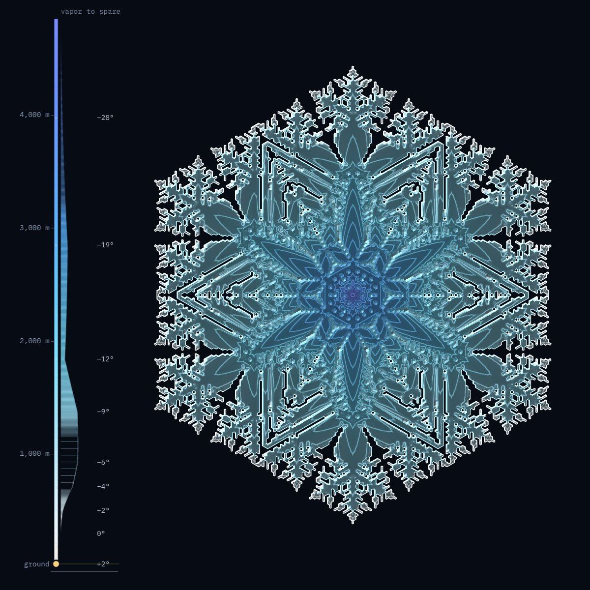

This is a kept sky. With scripts on, the page looks for a town where it is snowing this hour.
Sapporo
Japan · 21 Nov 2026, 11:45 there · snow showers

What is real
The town, the hour and the air. When the page opens it asks Open-Meteo which of 48 towns has snow falling this hour, and takes the one where it falls hardest. Then it reads the forecast for the air above that town: the temperature and the humidity at up to twelve heights, from near the ground to about nine kilometers up.
It is a weather model’s account of that air, not a balloon’s measurement of it.
What Nakaya found
Ukichiro Nakaya grew the first artificial snow crystal in Sapporo on 12 March 1936, on the tip of a rabbit hair, and went on to chart which shape grows in which air. Two things decide it: the temperature, and how much water vapor the air has to spare.
Just below freezing a crystal grows as a thin plate. From about −3° to −8° it grows tall, as a column or a needle. From −8° to −22° it is flat again, and in the wettest air, near −15°, it puts out branches. Colder than that it is a column or a thick plate. A crystal passes through several of these on its way down and keeps what each one gave it. Nakaya called snowflakes “letters sent from heaven”.
How the crystal is grown
With Clifford Reiter’s model of 2005: a grid of hexagons in which vapor spreads from cell to cell and freezes onto the edge of the ice. Two numbers decide whether it grows as a plate or as a fern. Here the air sets them, height by height, following Nakaya’s diagram, and the vapor to spare at each height sets how far the crystal widens there.
The whole fall is grown in a fraction of a second when the page opens. What you watch is that record played back, which is why the crystal can be dragged up the rail again, and why pointing at a piece of ice can say where it froze. Each piece is colored by the temperature it froze at, in the colors of the rail.
What it leaves out
The picture is flat. Where a real crystal would grow tall, this one cannot show it: it gets thicker and brighter, and no wider.
A forecast gives one humidity for a box of air some kilometers wide, cloud and clear gaps together, so the page counts air as cloud from 85% of saturation over ice. And it follows one crystal, falling alone through still air. Real snow is carried sideways, gathers frozen droplets, breaks, and mostly lands as clumps of many crystals. A real fall also takes an hour or more; here it takes half a minute. Sizes are not to scale from town to town: the largest crystals are drawn smaller than they would be, to fit.
One sky, kept
For readers without scripts, and for when Open-Meteo does not answer, the page keeps one sky: the air over Sapporo, where it was snowing when this page was made.
| Height | Temperature | Humidity | Over ice | To spare, g/m³ | What grows there |
|---|---|---|---|---|---|
| 8,650 m | −51.5° | 12% | 20% | 0 | too dry: nothing |
| 6,768 m | −45.2° | 32% | 50% | 0 | too dry: nothing |
| 5,255 m | −37.6° | 56% | 81% | 0 | too dry: nothing |
| 3,972 m | −28.2° | 68% | 90% | 0.01 | a thick plate |
| 2,846 m | −19.2° | 78% | 94% | 0.05 | a plate |
| 1,838 m | −11.7° | 79% | 89% | 0.03 | a plate |
| 1,371 m | −8.8° | 91% | 99% | 0.13 | a plate |
| 925 m | −5.6° | 95% | 100% | 0.13 | columns: it thickens |
| 710 m | −3.8° | 94% | 98% | 0.09 | columns: it thickens |
| 498 m | −1.8° | 87% | 89% | 0.02 | thin plates |
| 290 m | −0.1° | 85% | 85% | 0.00 | thin plates |
| 87 m | +1.6° | 82% | 0 | above freezing: nothing | |
| ground, 26 m | +1.6° | 82% | 0 | above freezing: nothing |
No. 021. Weather data by Open-Meteo, CC BY 4.0. Set in Newsreader and IBM Plex Mono. Home